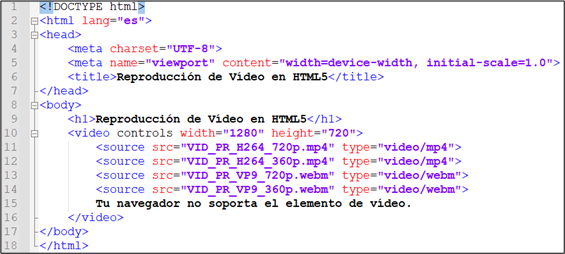
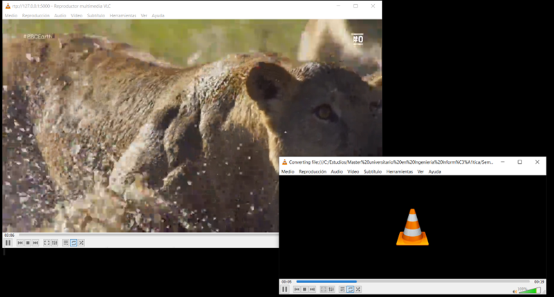
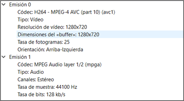
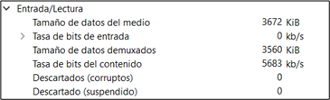
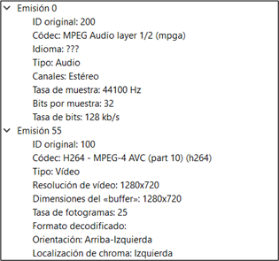
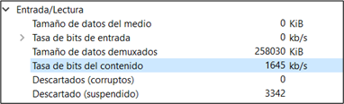
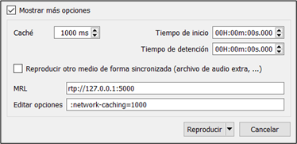
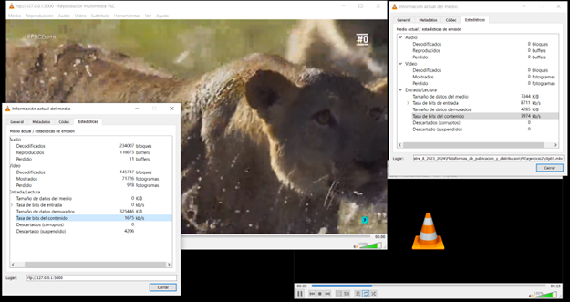
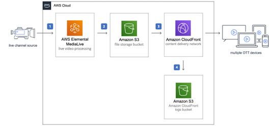
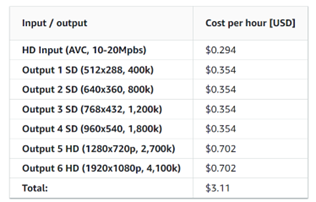

Ejercicio 1: Clip de vídeo incrustado en HTML 5
Tarea 1.1
He elegido un clip de vídeo de 19 segundos grabado con mi dispositivo móvil que incluye tanto un detalle de mi carnet de estudiante como una serie de vehículos y personas en movimiento.
Formato
Para su publicación en la web con HTML5 he decidido codificarlo en los siguientes formatos:
- MP4 (H.264 + AAC): Es el formato de vídeo más ampliamente soportado por navegadores y dispositivos. Proporciona una excelente calidad de compresión con un tamaño de archivo relativamente pequeño [1].
- WebM (VP9 + Vorbis): Es un formato abierto soportado por la mayoría de los navegadores modernos incluidos Chrome, Firefox y Opera. Ofrece buena calidad y compresión y es una excelente alternativa a MP4 para garantizar la compatibilidad con navegadores que prefieren formatos abiertos [2].
Esta elección debería cubrir prácticamente todos los navegadores modernos ofreciendo una buena relación entre calidad y tamaño de archivo lo que es crucial para una experiencia de visualización fluida sin consumir demasiado ancho de banda.
Resolución y Fotogramas por Segundo (FPS)
Para asegurar una buena experiencia de usuario y optimizar el uso de recursos he codificado el vídeo en dos resoluciones:
- HD (1280x720): Proporciona una excelente calidad de imagen adecuada para la mayoría de dispositivos. Es soportada por todos los navegadores y conexiones modernas, ofreciendo un buen equilibrio entre calidad y tamaño del archivo.
- 360p (640x360): Produce archivos de menor tamaño, ideal para usuarios con limitaciones de datos o conexiones lentas. Adecuada para dispositivos antiguos, garantiza una reproducción fluida en condiciones de red más limitadas.
Esta selección proporciona una experiencia de visualización de alta calidad para usuarios con conexiones y dispositivos modernos mientras se mantiene la accesibilidad y la eficiencia para aquellos con limitaciones en sus recursos tecnológicos.
En todos los casos una tasa estándar de 30 FPS que asegura una reproducción fluida y es adecuada para el contenido de vídeo en línea.
Tasa de bits y confirmación con la herramienta MediaInfo
Según El IBM Streaming Support Center se recomienda una tasa de bits de video de entre 1200 y 4000 kbps para la resolución 1280x720 y de entre 800 y 1200 kbps para 640x360 [3]. Por tanto utilizo:
- 3000 kbps para los videos con resolución 1280x720 y 30fps
- 1000 kbps para los videos con resolución 640x360 y 30fps
- 128 kbps para los canales de audio
Compruebo con MediaInfo que el bitrate total de los cuatro videos generados. Es correcto una vez considerado el bitrate de los canales de audio:
- VID_PR_H264_720p.mp4 (H.264 + AAC con resolución 1280x720 y 30fps): 3137kbps
- VID_PR_H264_360p.mp4 (H.264 + AAC con resolución 640x360 y 30fps): 1136 kbps
- VID_PR_VP9_720p.webm (VP9 + Vorbis con resolución 1280x720 y 30fps): 3097 kbps
- VID_PR_VP9_360p.webm (VP9 + Vorbis con resolución 640x360 y 30fps): 1102 kbps
Tarea 1.2
Creación de la Web:
He generado un fichero .html mediante un editor de texto que incluye el siguiente código:
Tal y como indica el enunciado he utilizado la etiqueta <video> para incrustar el vídeo. Con el atributo ‘controls’ se añaden los controles de reproducción como play, pause y volumen.
Para asegurar que la web pueda ser visualizada desde la mayor parte de los navegadores he utilizado el elemento
Características del Formato HTML5:
El formato HTML5 se distingue por varias características que lo hacen ideal para la publicación y visualización de vídeos en la web comparado con métodos más antiguos [4] [5]:
- Soporte Multiplataforma: Compatible con una amplia gama de dispositivos incluyendo ordenadores de escritorio, portátiles, tablets y smartphones.
- Compatibilidad Nativa: Funciona en todos los navegadores modernos sin necesidad de plugins adicionales.
- Uso de Etiquetas Semánticas: La etiqueta <video> es semántica y fácil de usar permitiendo la incrustación de vídeos con pocas líneas de código.
- Carga Adaptativa: Permite especificar múltiples fuentes de vídeo para asegurar la compatibilidad máxima y elegir automáticamente la mejor opción disponible.
- Accesibilidad: Soporta subtítulos y descripciones de audio mediante la etiqueta <track> mejorando la accesibilidad para usuarios con discapacidades.
- Navegación sin conexión: Permite a los usuarios continuar navegando por las páginas web y aplicaciones web incluso sin conexión.
- Integración con CSS y JavaScript: Facilita la personalización y manipulación de la reproducción del vídeo permitiendo crear experiencias de usuario interactivas y estilizadas.
Tarea 1.3
Publicación de la web.
He publicado el fichero .html y los vídeos en GitHub [6], una plataforma que permite hacerlo de manera gratuita a través de GitHub Pages.
Para ello he creado un nuevo repositorio en el que he subido el archivo html5 ‘index.html’ y los videos que he generado en las tareas anteriores. Por último publico la rama en GitHub Pages:
Experiencia de usuario
La experiencia al visualizar el video es buena, se reproduce casi inmediatamente, no se producen cortes y la calidad es muy buena. El único inconveniente lo he encontrado a la hora de reproducirlo a través de mi dispositivo móvil. El tamaño del video no se escala en función de la ventana en que se reproduce y a la hora de verlo desde el teléfono el tamaño de reproducción es muy grande, he tenido que alejar la imagen para verlo completo. Con los controles incrustados también es posible reproducirlo a pantalla completa.
Tarea 1.4
En el transcurso de esta tarea he experimentado con las distintas funcionalidades que es posible añadir al vídeo utilizando los atributos que el tag <video> ofrece en HTML5. A continuación detallo las que he añadido y cómo creo que mejoran la experiencia del usuario:
- Controls: Ya los tenía en la versión inicial de la web. Los controles de reproducción permiten al usuario pausar, reproducir y ajustar el volumen del vídeo.
- Width y height: He reestablecido las dimensiones del vídeo a 854x480 píxeles, un tamaño adecuado para la mayoría de las pantallas.
- Poster: He añadido una imagen de póster (poster.jpg) que se muestra antes de que el vídeo comience a reproducirse, proporcionando una vista previa más atractiva.
- ControlsList: La opción nodownload oculta el botón de descarga. Esto no supone tanto una mejora de la experiencia de usuario, sino del administrador de la web al que permite mantener cierto control sobre el contenido.
- Preload: Configurado en auto permite que el vídeo se cargue completamente al cargar la página, lo que asegura una reproducción sin interrupciones.
- DefaultPlaybackRate: Establecida en 1.0, que es la velocidad de reproducción normal del vídeo.
- DisablePictureInPicture: Deshabilita la función de Picture-in-Picture manteniendo la reproducción dentro de la página.
- Volume: Inicialmente ajustado al 80% del volumen máximo para un nivel de audio cómodo.
- Subtítulos: He añadido pistas de subtítulos en español (captions.es.vtt) e inglés (captions.en.vtt) para mejorar la accesibilidad del contenido.
La web está disponible a través del siguiente enlace:
https://carlosmdobler.github.io/html5-video/Tarea 1.5
Los CDN han evolucionado más allá de su función básica de distribución de contenido, ofreciendo una gran variedad de servicios que aportan valor añadido y que mejoran la publicación y distribución de material multimedia. A continuación detallo algunos de los que los pueden ofrecer:
- Subtitulado automático: Transcripción y generación automática de subtítulos para vídeos, mejorando la accesibilidad y la indexación del contenido. AWS lo ofrece a través de Amazon Transcribe [7].
- Identificación de cambios de plano: Detección y marcaje automático de los cambios de plano en los vídeos, puede ser útil para la edición de vídeo y la creación de resúmenes automáticos. AWS lo ofrece a través de AWS Rekognition Video [8].
- Detección de caras: Identificación y seguimiento de caras en vídeos, lo que puede ser utilizado para la creación de metadatos, análisis de audiencias y mejoras en la búsqueda. También se ofrece a través de Rekognition en AWS.
- Análisis de sentimiento y contenido: Análisis del contenido de vídeo para determinar el tono emocional, los temas principales y otros aspectos contextuales. Disponible a través de a través de AWS Rekognition Video.
- Optimización de calidad adaptativa (ABR): Ajuste dinámico de la calidad del vídeo en función del ancho de banda y las capacidades del dispositivo del usuario para asegurar una reproducción continua y sin interrupciones. AWS Elemental MediaPackage [9] proporciona ABR para la entrega de vídeo en múltiples calidades basadas en las condiciones de red.
- Protección de contenido: Inserción de marcas de agua digitales y técnicas de protección de contenido para prevenir la piratería y el uso no autorizado. Está disponible a través de AWS Elemental MediaPackage [9].
- Traducción: Traducción automática de audio y subtítulos en tiempo real para una audiencia global. Amazon Transcribe puede convertir el audio a texto en tiempo real y Amazon Translate puede traducir ese texto a otros idiomas en tiempo real [10].
Ejercicio 2: Práctica de streaming de un vídeo local
Tarea 2.1
He utilizado un fragmento de un documental para generar un clip de vídeo de 19 segundos con movimiento. Al hacerlo convertí el clip a formato MP4 utilizando Avidemux con los siguientes valores:
- Codificación de salida: MPEG4 AVC
- Modo de codificación: Tasa de bits media - dos pasadas a 5000 Kbps
- Formato de audio: MP3 (lame)
- Contenedor: MKV
Por último he verificado con MediaInfo que la conversión se ha realizado correctamente.
Tarea 2.2
He configurado la emisión repetitiva del clip01 siguiendo el ejemplo del clip de fútbol. Como el stream se entrecortaba he decidido utilizar el códec de emisión H.264+MP3 (TS) tal y como se recomienda en el enunciado para estas situaciones.
De acuerdo con la información del códec obtenida en el VLC de emisión el fichero almacenado se generó con codificación de video H264 AVC y con codificación de audio MPEG audio layer 1/2.
Revisando las estadísticas de emisión he podido comprobar que la tasa de bits de contenido varía entre los 2500kb/s y los 9000kb/s con una media de unos 4000kb/s
Tarea 2.3
Revisando ahora la información del códec en el VLC de recepción he podido comprobar que el stream recibido tiene una codificación de video H264 AVC y de audio MPEG audio layer 1/2 que coincide con la que se seleccionó para la emisión.
La tasa de bits de entrada sin embargo es de en torno a los 1500kb/s. Muy por debajo de la de emisión. Esto afecta a la calidad del vídeo resultando en una imagen menos nítida y con algunos artefactos de compresión.
Tarea 2.4
Si pauso el emisor el receptor tarda aproximadamente 1 segundo en pausarse. Esto ocurre porque el receptor tiene un caché que almacena hasta 1000 ms de datos del stream para asegurar una reproducción continua y sin interrupciones.
Tarea 2.5
Para calcular la compresión que el VLC de emisión está realizando al transcodificar el fichero almacenado a stream comparé la tasa de bits del fichero original con la tasa de bits del stream emitido.
El fichero clip01 almacenado tiene una tasa de bits de aproximadamente 5120 kbps (5000kbps de video y 128kbps de audio). Durante la emisión la tasa de bits varió entre 2500 kbps y 9000 kbps con una media de aproximadamente 4000 kbps. En la recepción la tasa de bits fue de aproximadamente 1500 kbps.
Tasa de compresión emisor = Tasa de bits fichero almacenado / Tasa de bits stream emitido = 5120 kbps / 4000 kbps = 1.28:1 ≈ 1.25:1
Esto indica que el stream emitido tiene una tasa de compresión de aproximadamente 1.25:1.
La tasa de bits de recepción es mucho menor y tal y como se indicó en el apartado 2.3 las perdidas repercuten negativamente en la calidad de la visualización. La tasa de compresión del stream recibido respecto al fichero original es de 3.5 a 1:
Tasa de compresión receptor = Tasa de bits fichero almacenado / Tasa de bits stream recibido = 5120 kbps / 1500 kbps = 3.41:1 ≈ 3.5:1
A continuación se muestra una captura de pantalla del escritorio con los dos VLC en marcha y sus ventanas con las estadísticas de cada uno abiertas.
Tarea 2.6
En esta tarea se abordará la opción de hacer un stream de video en vivo con Live Streaming en AWS con Amazon S3. Para hacerlo además del almacenamiento Amazon S3 se utilizan los servicios Elemental MediaLive [11] y Amazon CloudFront [12]. La descripción que he hecho de los pasos necesarios para configurar y realizar la transmisión en vivo se basan en la guía “Live Streaming on AWS with Amazon S3” [13] que se puede encontrar en la página de AWS.
Configuración de AWS Elemental MediaLive
El primer paso es utilizar AWS Elemental MediaLive para codificar las transmisiones en tiempo real. MediaLive comprime la transmisión de vídeo en versiones más pequeñas que pueden ser distribuidas a través de CloudFront. Para ello se debe acceder a la consola de AWS Elemental MediaLive y crear un nuevo canal.
En la configuración del canal es necesario seleccionar un códec de vídeo como H.264 y un códec de audio como AAC. La entrada se puede configurar como una fuente RTMP o HTTP Live Stream (HLS). En este momento se configuran también los perfiles de codificación para asegurar una transmisión fluida y de alta calidad.
Configuración de Amazon S3
Una vez que MediaLive está configurado es necesario configurar Amazon S3 para almacenar los segmentos codificados del vídeo. Primero se debe crear un bucket en Amazon S3 que servirá como el almacenamiento principal para los segmentos de vídeo. Después se deben configurar las políticas de seguridad y acceso para asegurar que solo los usuarios autorizados puedan acceder al bucket.
Amazon S3 no solo proporciona almacenamiento escalable y altamente disponible sino que también actúa como el origen de los contenidos de vídeo segmentados. Es posible establecer políticas de acceso detalladas utilizando AWS Identity and Access Management (IAM) para controlar quién puede leer y escribir en el bucket de S3.
Configuración de Amazon CloudFront
Con Amazon S3 configurado el siguiente paso es crear una distribución de CloudFront. Accedemos a la consola de Amazon CloudFront y creamos una nueva distribución configurándola para utilizar el bucket de Amazon S3 como origen. CloudFront se encargará de distribuir el contenido de vídeo a los espectadores con baja latencia y alta velocidad de transferencia.
Durante la configuración también es recomendable implementar una identidad de acceso al origen (OAI) para restringir el acceso directo a los contenidos en S3. Esto mejora la seguridad al asegurar que solo CloudFront pueda acceder directamente a los archivos en el bucket de S3. Adicionalmente se deben configurar las políticas de caché y seguridad para optimizar la entrega del contenido.
Políticas de seguridad y gestión de usuarios
La implementación de políticas de seguridad específicas es importante para garantizar la integridad y disponibilidad del servicio. AWS Identity and Access Management (IAM) se utiliza para definir roles y políticas que controlan el acceso a los diferentes servicios de AWS. Se pueden crear roles de IAM con permisos específicos para los distintos servicios que interactúan con la transmisión en vivo como MediaLive, S3 y CloudFront.
Cálculo estimado del coste
Para estimar el coste por minuto de una transmisión HD me baso en la información proporcionada en el ejemplo número 2 [14] de la guía de implementación de AWS Live Streaming en su apartado de costes. Los precios están en dólares y se han calculado para la región US-East-1 en Estados Unidos. En la guía no se especifica si se aplican diferentes tarificaciones para las distintas regiones pero puede dar una idea aproximada de lo que costaría el servicio en Europa. Se considera una transmisión en vivo de contenido HD (1080p 30fps) para 10000 usuarios simultaneos.
El coste de la transcodificación y empaquetado para contenido en alta definición (1080p 30 fps) es de aproximadamente $3.11 por hora.
Las tarifas de Amazon S3 incluyen 0023 dólares por gigabyte (GB) al mes almacenado para los primeros 50 TB. Además se cobran $0.005 por cada 1000 solicitudes PUT COPY POST o LIST. Para este caso con 6 outputs en distintas resoluciones y 21 segmentos de 4s almacenados. Se tiene un coste de almacenamiento por hora de $0.000005 y de $0.054 para las peticiones.
Si asumimos un ancho de banda promedio de 4.1Mbps por espectador y considerando una tarifa de $0.085 por GB distribuido el coste total de distribución será de $1531.49 por hora.
Por tanto el coste total del servicio es de 1534.65 dólares por hora o 25.58 dólares por minuto:
$3.11/h + $0.054/h + $1531.49/h = $1534.65/h = $25.58/min
Bibliografía
- [1] Wikipedia «Advanced Video Coding» Wikipedia. https://en.wikipedia.org/wiki/Advanced_Video_Coding (accedido abr. 14 2024).
- [2] Wikipedia «VP9». https://en.wikipedia.org/wiki/VP9 (accedido may 19 2024).
- [3] IBM «Recommended Encoding Settings». https://support.video.ibm.com/hc/en-us/articles/207852117-Internet-connection-and-recommended-encoding-settings (accedido may 19 2024).
- [4] V. Shah «Why you should choose HTML5?» 2022. https://www.aceinfoway.com/blog/html5-benefits-and-features (accedido may 19 2024).
- [5] Wikipedia «HTML5» 2024. https://en.wikipedia.org/wiki/HTML5 (accedido may 19 2024).
- [6] GitHub «GitHub». https://github.com/ (accedido may 19 2024).
- [7] AWS «Amazon Transcribe Documentation». https://docs.aws.amazon.com/transcribe/ (accedido may 23 2024).
- [8] AWS «Amazon Rekognition Documentation». https://docs.aws.amazon.com/rekognition/ (accedido may 23 2024).
- [9] AWS «AWS Elemental MediaPackage Documentation». https://docs.aws.amazon.com/mediapackage/.
- [10] AWS «Amazon Translate». https://aws.amazon.com/es/translate/ (accedido may 23 2024).
- [11] AWS «AWS Elemental MediaLive» 2024. https://aws.amazon.com/es/medialive/features/ (accedido abr. 16 2024).
- [12] AWS «Amazon CloudFront». https://aws.amazon.com/es/cloudfront/?nc2=h_ql_sol_use_cd (accedido abr. 16 2024).
- [13] AWS «Live Streaming on AWS with Amazon S3». https://docs.aws.amazon.com/solutions/latest/live-streaming-on-aws-with-amazon-s3/solution-overview.html (accedido may 28 2024).
- [14] AWS «Ejemplo costes 2 - Live Straming on AWS with Amazon S3». https://docs.aws.amazon.com/solutions/latest/live-streaming-on-aws-with-amazon-s3/cost-example-2.html (accedido may 29 2024).